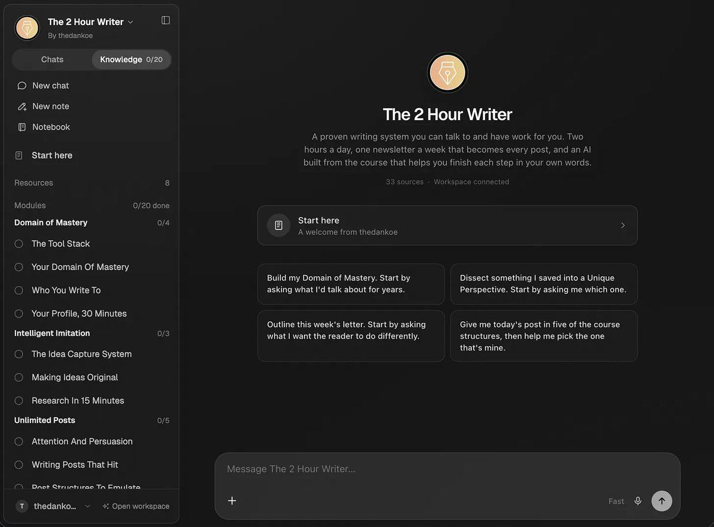

原题：How to become disgustingly self-disciplined
作者：Dan Koe（@thedankoe） | 发布：2026-09-20（北京时间；原始时间戳为 2026-09-19 17:24 UTC） | 原文：https://x.com/thedankoe/status/2101361833940791607
译注：【配图】为原文配图位置。第二节标题原文"You aren't disciplined because you aren't the person who doesn't view it as discipline"含双重否定，按语义译出。"Make it so easy succeed"缺"to"，按语义译。文末大段 Eden 数字产品推广照译保留。
You’re tired of where you are. You’re tired of your physique, or how your mind is not your friend, or how you have to stress over not being able to pay the bills each month, or how you’re going to end up alone.
你终于攒够了动力，开始去健身房、开始做生意、开始跟更多人搭话，就那一套。
You finally gain the motivation to start in the gym, start the business, start talking to more people, you know the drill.
快进 2–4 周，什么都没变。
Fast forward 2-4 weeks and nothing has changed.
你甚至都说不清它是怎么发生的……就这么滑回了旧生活，一点进展都没有。
You don’t even know how it happened... you just ended up back in your old life without making any progress.
And this isn’t the first time. You lock in, fall off, lock in again, fall off, and 10 years go by (for some people, their entire life goes by) without breaking the habit of being your worst self.
If you look at the top athletes, startup founders, visionaries, and strategists who seem to work 16 hours a day without breaking a sweat, do you think they struggle to do that?
Is it actually hard for them? No. In fact, it’s extremely hard for them to do what the average person does. It’s a living hell for them to even sense that they’re devolving into a mediocre life.
为什么？因为那就是他们这个人。
Why? Because that’s who they are.
我们怎么在自己身上复制这一点？
How do we replicate this in our own life?
系好安全带。
Buckle up.
接下来会有点颠。
It gets bumpy.
对自己所处的境地厌恶到别无选择、只能赢
Become so disgusted with where you are, you have no option but to win
Rockets use 85% to 90% of their total mass as fuel during launch and acceleration, whereas coasting requires zero fuel once orbital or escape velocity is reached.
换句话说，让你启动的东西，并不是让你持续走下去的东西。
In other words, what gets you started isn’t what keeps you going.
这很反直觉，就跟生活里大多数真理一样，但如果你想要可持续的改变，就得先靠蛮力闯进去。
It’s counterintuitive, as most of life’s truths are, but if you want sustainable change, then you have to brute-force your way into it.
I move into an apartment I can’t afford so I’m forced to make my business successful enough to afford it, or I go homeless, as one example. I wouldn’t go homeless of course, but I believed I would have. I’ve done that multiple times, and it’s the single greatest “business growth hack” I’ve found. It sounds extreme, and that’s the point. It’s not for everyone, it’s only for those who believe in themselves.
About 5 years ago, I would intentionally go to raves, drink, and party every 2 months or so as a form of glitch in my overly optimized lifestyle. I also enjoyed doing it. It was a nice little shock to the system. The next morning, as you would guess, I would feel horrible. I felt my progress in business and health slipping, and since those goals mattered to me, I usually woke up the next morning with renewed motivation to push as hard as I could.
That leads to the second most potent fuel I’ve found, which is a strong disgust for the life I do not want to live. That’s what almost anyone can take advantage of if they want to change. Waking up with a bad hangover is one way to do it (if you actually have a goal that makes the hangover a bad thing), but there’s another way if that’s not your cup of tea.
这一整周，我要你做下面这件事：
For the entirety of this week, here’s what I want you to do:
Observe society and see where most people end up. It’s not pretty. Usually broke, overweight, married to someone they grow to hate, and drowning in financial responsibilities that take advantage of their situation making it nearly impossible to get out. That’s the default end state of the average person’s life. Thanks, entropy.
If thinking about that for a week doesn’t light a fire in your belly (it does for me every time I think about it), the next option is to simply let yourself go until the pain is so great that you never want to experience that life again.
对很多人来说，那并不遥远。问题在于他们把痛麻痹了，把它塞到脑子最深处，因为直面它太疼了。
For many people, that's not far off. The problem is that they numb the pain. They shove it in the back of their mind because it would be too painful to face.
你要是能直面它一周，就够了。
If you can face it for a week, that will do the trick.
但既然发射燃料到手了，我们到底要怎么把它变成可持续的东西？
But now that we have the launch fuel, how do we actually turn that into something sustainable?
你之所以不自律，是因为你还不是那种根本不把它当“自律”的人
You aren’t disciplined because you aren’t the person who doesn’t view it as discipline.
At this point in our history it should be possible for an individual to build a self that is not simply the outcome of biological drives and cultural habits, but a conscious, personal creation.
– Mihaly Csikszentmihalyi
Do you think Elon Musk lies around in bed when he wakes up, dreading the day ahead? Do you think he hits snooze 5 times, dreaming of not having to go to work?
你觉得阿诺德·施瓦辛格得先骗骗自己，才能健康饮食、一天练两回吗？
Do you think Arnold Schwarzenegger had to trick himself into eating healthy and training twice a day?
你觉得这种级别的高绩效者，会把做难事当成一种“难”（按你理解的那个意思）吗？还是说他们热爱它？
Do you think that high performers of this caliber consider it “hard” (in your sense of the word) to do hard things? Or do they love it?
If I am laser-focused on a goal, like cutting weight while hitting my macro targets, a cheat meal at McDonald's doesn’t sound tasty to me. It sounds fucking disgusting. You would have to pry me from my chair to get me to even lick a double quarter pounder with cheese. It would take an immense amount of discipline for me to eat mediocre food.
That sounds pretentious, I’m aware of that, but it’s going to be far easier for me to drop 10-20 pounds than it is for the person who can’t stop thinking about the next time they get to drown in grease.
People who cannot fathom this will then say, “Why don’t you have a little fun! Lighten up!” as a defense mechanism to protect their identity, but what they do not understand is that I am having more fun now than I would be going with you to eat your entire daily caloric allowance in 15 minutes just to go into a food coma and sloth around the rest of the day. Yes, so fun!
It is one of the greatest feelings in the world to be in pursuit of your potential, with little to no gap between who you are and who you want to be. You live in the flow state, a video game, taking on a string of challenging quests you choose to accept, and being rewarded amply for doing so. Maybe not in the form of money, but insight, experience, and direct feedback from reality.
It’s not like a business where you have a direct and rapid feedback mechanism like money - if you aren’t making any, reality is telling you you’re doing something wrong, and if you are making money, reality is telling you you’re exactly where you should be revenue-wise.
那我们怎么办？怎么把那股脏兮兮的发射燃料，变成一个可持续的系统，最后变成“我本来就是这样的人”？
So what do we do? How do we take the dirty launch fuel and turn it into a sustainable system that eventually becomes “just who I am?”
给我 10 分钟，我让你看清怎么变成一个全新的人
Give me 10 minutes and I’ll show you how to become someone entirely new
你应该更关心你当前的轨迹，而不是你当前的结果。
——詹姆斯·克利尔
You should be far more concerned with your current trajectory than with your current results.
– James Clear
你是你反复所做之事的统计总和。
You are the statistical sum of what you repeatedly do.
而你所做的事，不止是那些你实际做出的决定。
And what you do is more than the physical decisions you make.
你是流经你的一切的累积结果，两个方向都算：输入和输出。
You are the accumulated result of everything that flows through you, in both directions, input and output.
Input = everything you’re exposed to. Every book you read. Every post you glance at for a split second. Every person you call a friend. Every belief your parents and teachers installed before you even had a chance to consent. The news you read to stay informed. The conversations you overhear. The people whose lives you watch from a distance.
Output = everything you produce in the world. Your decisions, actions, works, and work. What you do when no one is watching and what you do when everyone is.
这确确实实就是整个等式。
That is literally the entire equation.
输入塑造那个感知情境、做出决定的心智；输出塑造那个把下一个输入端到你面前的生活。它会复利。
Input shapes the mind that perceives situations and makes decisions. Output shapes the life that presents the next input. It compounds.
要改变我们是谁，就得改变这股信息与行动的流。
To change who we are we must change this flow of information and action.
Curate and protect everything your mind is exposed to on a daily basis. You must immerse yourself in stimuli that match the person you want to become and starve the person you used to be. The old you must die.
有些人看到下面这些可能会想：“哦，我早知道了。”或者“这不就是基础的自我提升嘛。”
Some may see what’s below and think “Oh I already knew that.” or “That’s just basic self-help.”
But if you actually knew it, you wouldn’t be in this situation, would you? Writing it off as “basic” keeps you from seeing how simple this all is. You are not special, and you do not need something novel to change your life. You need what’s been proven to work for the entirety of human existence.
Most people are intellectually obese. Unfollow, mute, and unsubscribe from anything that lowers your standards or wastes your attention. Follow and read the people and ideas that raise it. Your social timeline is an environment just like any other. You live in it, and it influences you.
第二，选好你身边的人。
Second, choose the people you surround yourself with.
Their values, fears, and assumptions about what’s normal and possible leak into you even if you think they don’t. This is the most difficult part. You can try to bring your friends along with you, but it is extremely difficult to help people who don’t want to be helped.
第三，审问自己的心智，揪出那些不服务于你的信念。
Third, interrogate your mind for beliefs that do not serve you.
Most of your beliefs about money, what you deserve in this life, and what’s possible to achieve were determined before you could even understand the language you speak. If you haven’t become aware of these beliefs, then it’s unlikely that they have shifted. You cannot change what you have not examined.
The difference between reading ten posts fast and one book slowly is drastic. I bet you can’t tell me about even 2 of the social posts you read yesterday. But a life changing YouTube video, podcast, book chapter, or Substack article that is created with care by someone who is passionate about what they do is something that sticks with you, and influences you for the better.
让成功简单到你要是失败了都显得蠢
Make it so easy succeed you’d look stupid if you fail
The first is the launch. You know, using a dirty fuel to gain the motivation to make the change in the first place. Because frankly, without it, you probably aren’t going to change your inputs, and you won’t be able to break through the atmosphere and coast with the sustainable system we are about to create.
你的输出，也就是决定和行动，发生在一个四部分的反馈回路里：
Your outputs, or decisions and actions, occur as a four-part feedback loop:
This is essentially the habit loop from B.F. Skinners operant conditioning, which went on to be popularized by Charles Duhigg (The Power of Habit) and James Clear (Atomic Habits).
提示 → 反应 → 奖励，这是教科书式的行为心理学，它管用。
Cue → response → reward is textbook behavioral psychology. It works.
第一步，让想要的输出成为阻力最小的那条路，让不想要的输出变得极其麻烦。
The first step is making the desired output the path of least resistance, and the undesired output incredibly inconvenient.
第二步，造一个触发器，也就是启动那个通往想要输出的行为的信号，最好是每天一次。
The second is creating a trigger, or signal that starts the behavior that leads to the desired output, preferably on a daily basis.
第三步，把成功压到输出的最小可辨认版本：不是一次很棒的训练，而是踏进健身房。
The third is reducing success to the minimum recognizable version of the output (not a great workout, but stepping into the gym).
第四步，奖励。行为一结束就立刻给点享受的东西，每一次都给，直到行为本身变成奖励。
The fourth is the reward. Something enjoyable delivered right after the behavior, every single time, until the behavior is the reward itself.
这个反馈回路，用例子讲最清楚：
This feedback loop is best illustrated with examples:
First, you curate your inputs. Follow two to three sources of inspiration and education so your feed reminds you of your goal as you make this change. Unfollow the fitness content that sells insecurity and acceptance of mediocrity. Surround yourself with at least one person who already trains, because their normal becomes your normal. Examine the beliefs installed in you about your body and what you’re capable of.
Environment - Set your clothes out the night before, remove all junk food from your cabinets, and study the exercises you’re doing in tomorrows workout so you have clarity, and maybe a bit of excitement, to try them out.
Signal - Go at the same time every day. For me, that time is around 11am. If you’re just starting, set an alarm for that time, and make the alarm a distinct tone that represents going to the gym.
行为——到场，只对自己承诺做到最低限度：一组高强度的动作。既然人都到了，你多半会想接着练下去。
Behavior - Show up and only promise yourself you’ll do the minimum. One hard set. Chances are you’ll want to keep going since you’re already there.
Reward - Stop at the local smoothie place or even a gas station to get a protein shake. This was my reward when I first started. Sure, they’re probably not that great for you, but big picture the end state you are pursuing outweighs any minor damage it does.
目标 2 = 把你的兴趣或写作变成一门生意
Goal 2 = Turning your interests or writing into a business
这个我们在这儿经常聊，所以值得拿出来当例子。
We talk about this a lot here, so it’s a worthy example.
Inputs - Follow the creators you want to model and the thinkers who sharpen your ideas. Starve yourself of everything else, let your algorithm become a source of inspiration. Read books and long form content from people who have achieved what you want, they are your mentors. Create a new digital friend group of people who are doing the same thing - you could probably meet them in the comments of this article. Examine your beliefs about money, whether you believe it’s difficult to make, and whether wealth generation is luck or skill.
Environment - Add your idea capture app as a shortcut on your phone. Have your writing/scheduling app open so articles, posts, and newsletters write themselves. Batch your highest priority, highest leverage, and most difficult tasks in the morning.
Signal - Your first coffee in the morning at your desk, a specific song to start off the writing session, something like that, but never only relying on inspiration as a signal to create.
Behavior - Post the minimum amount of content necessary. One post a day, one newsletter a week, with the minimum quality. You just need it to go out, you don’t need it to be perfect or brilliant. Consistency both outruns and creates taste.
Reward - For me, I enjoy walks. I always want to be outside. Once I finish my 2-3 main priorities in the morning, the walk is my reward. For you it could be tracking a streak and seeing the number go up. Eating breakfast (I also like “fasting” while I work, although it’s not long enough to be considered intermittent fasting. Helps with focus.)
Launch the rocket. Become heavily inspired or heavily disgusted with where your life is. Whichever fuel you thrive on, neither is bad when channeled toward something meaningful.
别浪费那美妙又强效的燃料，用它来建系统。让行为变自动，到最后它会变成“我本来就是这么做的”。
Do not waste that beautifully potent fuel. Use it to create the system. Make the behavior automatic, and eventually it will become “just what I do.”
作者产品推广（Eden）· 已折叠，点击展开
最后，如果这最后一个例子戳中了你，你现在可以在 Eden 上卖数字产品了。
And finally, if that last example is something you resonate with, you can now sell digital products in Eden.
不只是一堂课或一本电子书，而是一种更好的、把你的兴趣和知识变现的方式。
Not just a course or ebook, but a better way to monetize your interests and knowledge.
Think of it like a course you can talk to, or an ebook you can talk to, or even an article that helps you implement what’s inside (I could quickly turn this article into a product and sell it for $10 and link it here).
它是属于你自己的 AI，里面装着你的知识。
It’s your own AI, with your knowledge inside.
你再也不用自己搭建或维护 AI 应用，也不用操心 AI 的成本，我们替你搞定。
You no longer need to build or maintain your own AI app, and you don’t need to worry about AI costs. We handle that for you.

【配图】作者产品推广（Eden）· 已折叠，点击展开
所以，如果你卖电子书或课程，或者你要发提示词、自定义 GPT，或者你手上有样值钱的东西值得卖——只要在 Eden 上卖，你会赚得更多（你的产品也会显得更值钱）。
So, if you sell an ebook or course, or if you give out prompts or Custom GPTs, or you have something valuable that would be worth selling - you will make more money (and your product will be perceived as more valuable) if you sell it on Eden.
信息产品远远没死，它们只是还没演化到能在 AI 时代活下去。
Info products are not even close to dead, they just haven’t evolved to live in the AI age.
那是你的知识，别人不需要你在场，就能跟它对话。
It’s your knowledge, and other people can chat with it without needing you there.
作者产品推广（Eden）· 已折叠，点击展开
在这里了解更多。https://eden.so/
Learn more about it here.
或者用这个定制 AI 帮你想出一个能赚钱的数字产品点子，它还会帮你把它做出来。（译注：抓取文本中此句未附链接。）
Or use this custom AI to help you come up with a profitable digital product idea. It also helps you build it.
感谢阅读。
Thank you for reading.
回头聊。
Talk soon.
——Dan
– Dan
English original (from the X article data)
Tell me if this sounds familiar.
You want to change your life.
Like really bad.
You’re tired of where you are. You’re tired of your physique, or how your mind is not your friend, or how you have to stress over not being able to pay the bills each month, or how you’re going to end up alone.
You finally gain the motivation to start in the gym, start the business, start talking to more people, you know the drill.
Fast forward 2-4 weeks and nothing has changed.
You don’t even know how it happened... you just ended up back in your old life without making any progress.
And this isn’t the first time. You lock in, fall off, lock in again, fall off, and 10 years go by (for some people, their entire life goes by) without breaking the habit of being your worst self.
It sucks.
It’s like you never even tried to change.
Because, well, frankly, you didn’t.
You didn’t actually try.
So what do you do?
If you look at the top athletes, startup founders, visionaries, and strategists who seem to work 16 hours a day without breaking a sweat, do you think they struggle to do that?
Or is that what they want to do?
Is it actually hard for them? No. In fact, it’s extremely hard for them to do what the average person does. It’s a living hell for them to even sense that they’re devolving into a mediocre life.
Why? Because that’s who they are.
How do we replicate this in our own life?
Buckle up.
It gets bumpy.
Become so disgusted with where you are, you have no option but to win
Rockets use 85% to 90% of their total mass as fuel during launch and acceleration, whereas coasting requires zero fuel once orbital or escape velocity is reached.
In other words, what gets you started isn’t what keeps you going.
It’s counterintuitive, as most of life’s truths are, but if you want sustainable change, then you have to brute-force your way into it.
That’s stage one.
The launch fuel. Motivation, pain, a win, a loss, or a burst of willpower. Something that launches you into an intense period of change.
There have been many times in my life when I have used what I call tactical stress.
I move into an apartment I can’t afford so I’m forced to make my business successful enough to afford it, or I go homeless, as one example. I wouldn’t go homeless of course, but I believed I would have. I’ve done that multiple times, and it’s the single greatest “business growth hack” I’ve found. It sounds extreme, and that’s the point. It’s not for everyone, it’s only for those who believe in themselves.
About 5 years ago, I would intentionally go to raves, drink, and party every 2 months or so as a form of glitch in my overly optimized lifestyle. I also enjoyed doing it. It was a nice little shock to the system. The next morning, as you would guess, I would feel horrible. I felt my progress in business and health slipping, and since those goals mattered to me, I usually woke up the next morning with renewed motivation to push as hard as I could.
That leads to the second most potent fuel I’ve found, which is a strong disgust for the life I do not want to live. That’s what almost anyone can take advantage of if they want to change. Waking up with a bad hangover is one way to do it (if you actually have a goal that makes the hangover a bad thing), but there’s another way if that’s not your cup of tea.
For the entirety of this week, here’s what I want you to do:
Observe society and see where most people end up. It’s not pretty. Usually broke, overweight, married to someone they grow to hate, and drowning in financial responsibilities that take advantage of their situation making it nearly impossible to get out. That’s the default end state of the average person’s life. Thanks, entropy.
If thinking about that for a week doesn’t light a fire in your belly (it does for me every time I think about it), the next option is to simply let yourself go until the pain is so great that you never want to experience that life again.
For many people, that's not far off. The problem is that they numb the pain. They shove it in the back of their mind because it would be too painful to face.
If you can face it for a week, that will do the trick.
But now that we have the launch fuel, how do we actually turn that into something sustainable?
You aren’t disciplined because you aren’t the person who doesn’t view it as discipline.
At this point in our history it should be possible for an individual to build a self that is not simply the outcome of biological drives and cultural habits, but a conscious, personal creation.
– Mihaly Csikszentmihalyi
I’m begging you to understand this.
Do you think Elon Musk lies around in bed when he wakes up, dreading the day ahead? Do you think he hits snooze 5 times, dreaming of not having to go to work?
Do you think Arnold Schwarzenegger had to trick himself into eating healthy and training twice a day?
Do you think that high performers of this caliber consider it “hard” (in your sense of the word) to do hard things? Or do they love it?
It’s just what they do. It’s automatic.
If I am laser-focused on a goal, like cutting weight while hitting my macro targets, a cheat meal at McDonald's doesn’t sound tasty to me. It sounds fucking disgusting. You would have to pry me from my chair to get me to even lick a double quarter pounder with cheese. It would take an immense amount of discipline for me to eat mediocre food.
That sounds pretentious, I’m aware of that, but it’s going to be far easier for me to drop 10-20 pounds than it is for the person who can’t stop thinking about the next time they get to drown in grease.
People who cannot fathom this will then say, “Why don’t you have a little fun! Lighten up!” as a defense mechanism to protect their identity, but what they do not understand is that I am having more fun now than I would be going with you to eat your entire daily caloric allowance in 15 minutes just to go into a food coma and sloth around the rest of the day. Yes, so fun!
It is one of the greatest feelings in the world to be in pursuit of your potential, with little to no gap between who you are and who you want to be. You live in the flow state, a video game, taking on a string of challenging quests you choose to accept, and being rewarded amply for doing so. Maybe not in the form of money, but insight, experience, and direct feedback from reality.
But identity change is so abstract.
You can’t see your identity.
It’s not like a business where you have a direct and rapid feedback mechanism like money - if you aren’t making any, reality is telling you you’re doing something wrong, and if you are making money, reality is telling you you’re exactly where you should be revenue-wise.
So what do we do? How do we take the dirty launch fuel and turn it into a sustainable system that eventually becomes “just who I am?”
Give me 10 minutes and I’ll show you how to become someone entirely new
You should be far more concerned with your current trajectory than with your current results.
– James Clear
You are the statistical sum of what you repeatedly do.
And what you do is more than the physical decisions you make.
You are the accumulated result of everything that flows through you, in both directions, input and output.
Input = everything you’re exposed to. Every book you read. Every post you glance at for a split second. Every person you call a friend. Every belief your parents and teachers installed before you even had a chance to consent. The news you read to stay informed. The conversations you overhear. The people whose lives you watch from a distance.
Output = everything you produce in the world. Your decisions, actions, works, and work. What you do when no one is watching and what you do when everyone is.
That is literally the entire equation.
Input shapes the mind that perceives situations and makes decisions. Output shapes the life that presents the next input. It compounds.
To change who we are we must change this flow of information and action.
For input, the rule is simple.
Curate and protect everything your mind is exposed to on a daily basis. You must immerse yourself in stimuli that match the person you want to become and starve the person you used to be. The old you must die.
Some may see what’s below and think “Oh I already knew that.” or “That’s just basic self-help.”
But if you actually knew it, you wouldn’t be in this situation, would you? Writing it off as “basic” keeps you from seeing how simple this all is. You are not special, and you do not need something novel to change your life. You need what’s been proven to work for the entirety of human existence.
First, choose your information diet.
Most people are intellectually obese. Unfollow, mute, and unsubscribe from anything that lowers your standards or wastes your attention. Follow and read the people and ideas that raise it. Your social timeline is an environment just like any other. You live in it, and it influences you.
Second, choose the people you surround yourself with.
Their values, fears, and assumptions about what’s normal and possible leak into you even if you think they don’t. This is the most difficult part. You can try to bring your friends along with you, but it is extremely difficult to help people who don’t want to be helped.
Third, interrogate your mind for beliefs that do not serve you.
Most of your beliefs about money, what you deserve in this life, and what’s possible to achieve were determined before you could even understand the language you speak. If you haven’t become aware of these beliefs, then it’s unlikely that they have shifted. You cannot change what you have not examined.
Fourth, exchange passive for active consumption.
The difference between reading ten posts fast and one book slowly is drastic. I bet you can’t tell me about even 2 of the social posts you read yesterday. But a life changing YouTube video, podcast, book chapter, or Substack article that is created with care by someone who is passionate about what they do is something that sticks with you, and influences you for the better.
Make it so easy succeed you’d look stupid if you fail
I forgot to mention something important.
This is the second stage of change.
The first is the launch. You know, using a dirty fuel to gain the motivation to make the change in the first place. Because frankly, without it, you probably aren’t going to change your inputs, and you won’t be able to break through the atmosphere and coast with the sustainable system we are about to create.
Your outputs, or decisions and actions, occur as a four-part feedback loop:
Environment → Signal → Behavior → Payoff
This is essentially the habit loop from B.F. Skinners operant conditioning, which went on to be popularized by Charles Duhigg (The Power of Habit) and James Clear (Atomic Habits).
Cue → response → reward is textbook behavioral psychology. It works.
The first step is making the desired output the path of least resistance, and the undesired output incredibly inconvenient.
The second is creating a trigger, or signal that starts the behavior that leads to the desired output, preferably on a daily basis.
The third is reducing success to the minimum recognizable version of the output (not a great workout, but stepping into the gym).
The fourth is the reward. Something enjoyable delivered right after the behavior, every single time, until the behavior is the reward itself.
This feedback loop is best illustrated with examples:
Goal 1 = Gaining muscle in the gym.
First, you curate your inputs. Follow two to three sources of inspiration and education so your feed reminds you of your goal as you make this change. Unfollow the fitness content that sells insecurity and acceptance of mediocrity. Surround yourself with at least one person who already trains, because their normal becomes your normal. Examine the beliefs installed in you about your body and what you’re capable of.
Then engineer your outputs.
Environment - Set your clothes out the night before, remove all junk food from your cabinets, and study the exercises you’re doing in tomorrows workout so you have clarity, and maybe a bit of excitement, to try them out.
Signal - Go at the same time every day. For me, that time is around 11am. If you’re just starting, set an alarm for that time, and make the alarm a distinct tone that represents going to the gym.
Behavior - Show up and only promise yourself you’ll do the minimum. One hard set. Chances are you’ll want to keep going since you’re already there.
Reward - Stop at the local smoothie place or even a gas station to get a protein shake. This was my reward when I first started. Sure, they’re probably not that great for you, but big picture the end state you are pursuing outweighs any minor damage it does.
Goal 2 = Turning your interests or writing into a business
We talk about this a lot here, so it’s a worthy example.
Inputs - Follow the creators you want to model and the thinkers who sharpen your ideas. Starve yourself of everything else, let your algorithm become a source of inspiration. Read books and long form content from people who have achieved what you want, they are your mentors. Create a new digital friend group of people who are doing the same thing - you could probably meet them in the comments of this article. Examine your beliefs about money, whether you believe it’s difficult to make, and whether wealth generation is luck or skill.
Environment - Add your idea capture app as a shortcut on your phone. Have your writing/scheduling app open so articles, posts, and newsletters write themselves. Batch your highest priority, highest leverage, and most difficult tasks in the morning.
Signal - Your first coffee in the morning at your desk, a specific song to start off the writing session, something like that, but never only relying on inspiration as a signal to create.
Behavior - Post the minimum amount of content necessary. One post a day, one newsletter a week, with the minimum quality. You just need it to go out, you don’t need it to be perfect or brilliant. Consistency both outruns and creates taste.
Reward - For me, I enjoy walks. I always want to be outside. Once I finish my 2-3 main priorities in the morning, the walk is my reward. For you it could be tracking a streak and seeing the number go up. Eating breakfast (I also like “fasting” while I work, although it’s not long enough to be considered intermittent fasting. Helps with focus.)
I think you get the point.
Launch the rocket. Become heavily inspired or heavily disgusted with where your life is. Whichever fuel you thrive on, neither is bad when channeled toward something meaningful.
Do not waste that beautifully potent fuel. Use it to create the system. Make the behavior automatic, and eventually it will become “just what I do.”
And finally, if that last example is something you resonate with, you can now sell digital products in Eden.
Not just a course or ebook, but a better way to monetize your interests and knowledge.
Think of it like a course you can talk to, or an ebook you can talk to, or even an article that helps you implement what’s inside (I could quickly turn this article into a product and sell it for $10 and link it here).
It’s your own AI, with your knowledge inside.
You no longer need to build or maintain your own AI app, and you don’t need to worry about AI costs. We handle that for you.
So, if you sell an ebook or course, or if you give out prompts or Custom GPTs, or you have something valuable that would be worth selling - you will make more money (and your product will be perceived as more valuable) if you sell it on Eden.
Info products are not even close to dead, they just haven’t evolved to live in the AI age.
It’s your knowledge, and other people can chat with it without needing you there.
Learn more about it here.
Or use this custom AI to help you come up with a profitable digital product idea. It also helps you build it.